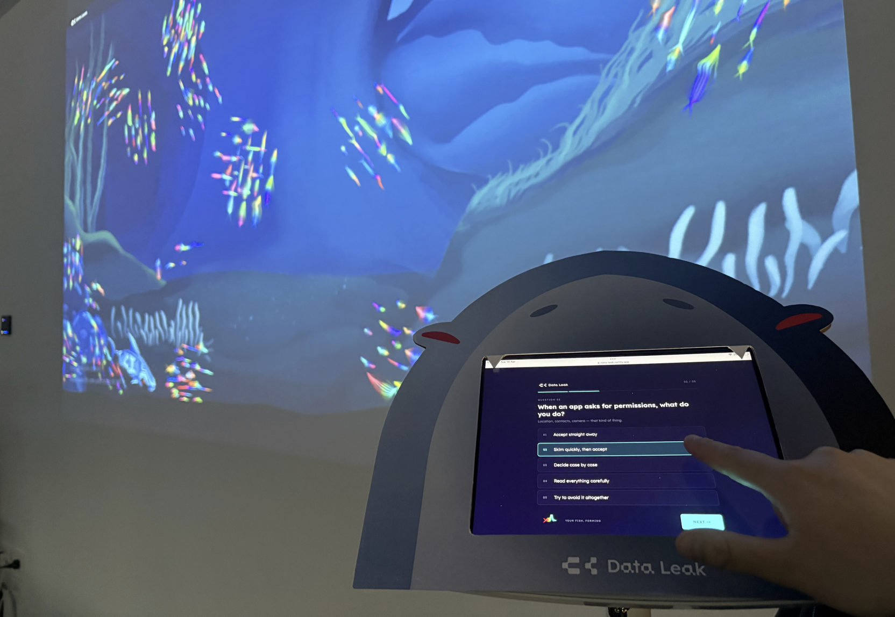
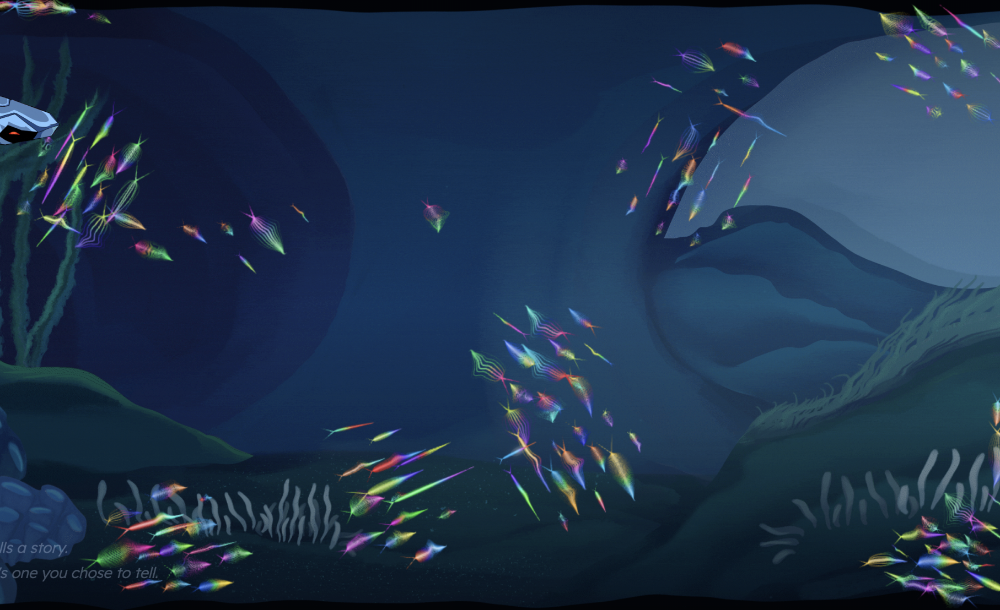
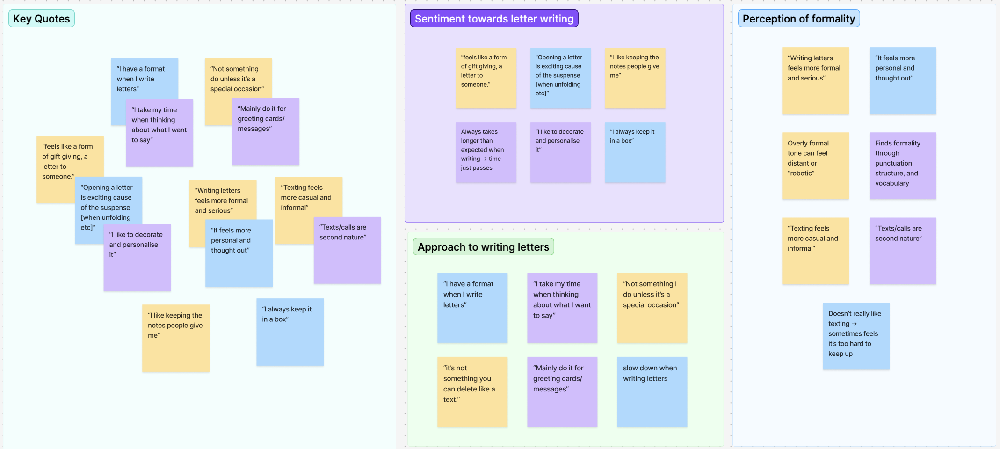
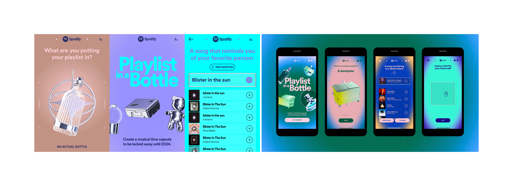
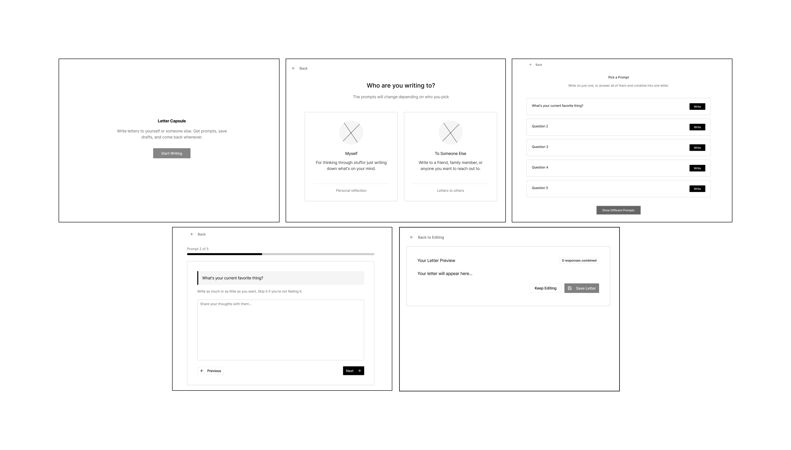
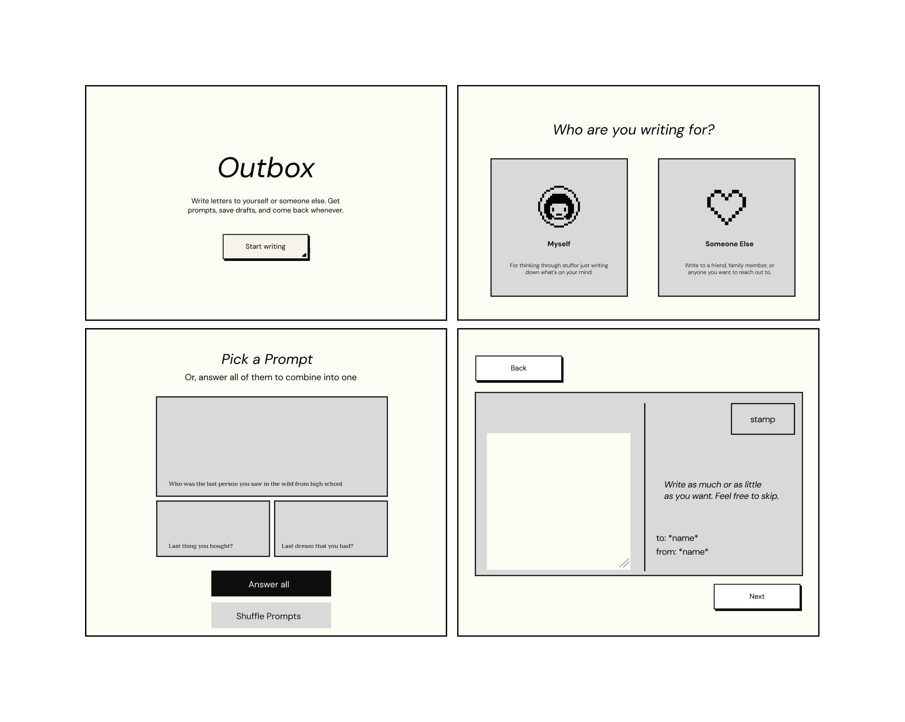
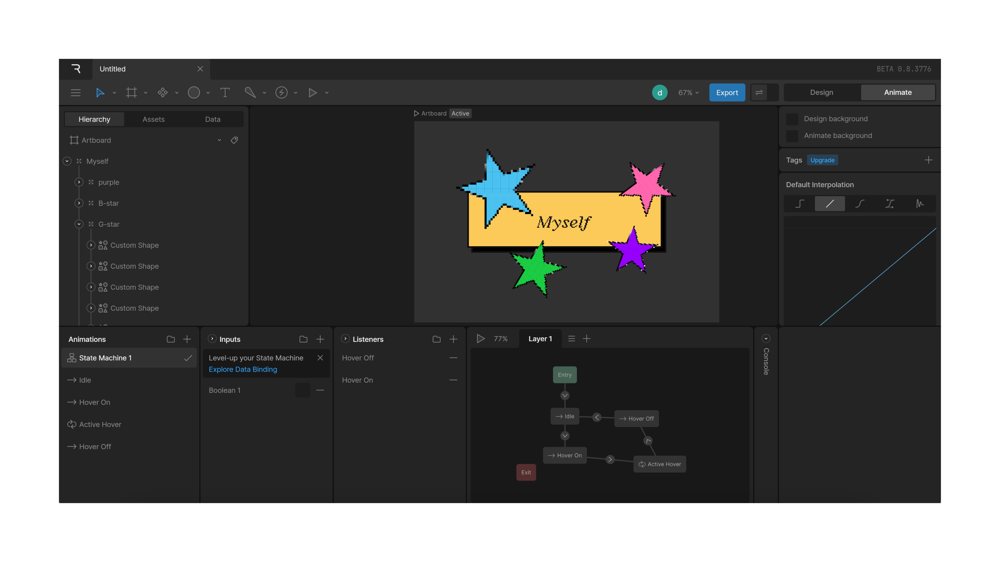

Challenge
Investigate a creative project that explores a context, subject, and medium within the field of media design. This project is self led and experiment based to create a design collateral that answers a research question.
Problem
Explore how people engage with epistolary communication in a digital-first world, and identify opportunities to make the experience feel more approachable and engaging.
Solution
Create a writing experience that helps people ease into personal expression through guidance and interaction.
DISCOVER
Through academic research, a common theme across papers I found was that:
DEFINE
So I asked questions in hopes to learn more about: maybe any memorable messages, rituals/motivations, what they talk about, and preferred mediums of communications.

Affinity map to synthesize interview responses and identify key themes
I noticed two things about this audience:
Habits
They likes to write letters but rarely do; usually only for birthdays, goodbyes, or special occasions.
Viewed as very formal and serious.
Structure
Rely on familiar formats when writing letters, providing guidance.
They type a draft before committing to writing.
CLARIFY
I had a difficult time coming up with the solution. I initially wanted to build a website, but it felt a bit ironic for a project encouraging more intentional, physical-feeling writing.
So I stepped back and looked at platforms my audience already engaged with, like Spotify, to understand how familiar digital behaviours could shape a more approachable experience.

Looking at Spotify's 'Time Capsule' feature, this became a turning point. Instead of forcing a fixed solution, I started thinking about how the experience could feel more like guidance than output.
From there, the focus shifted:
CONCEPTUALISE

Developing code, then prototyping as a group

Lofi prototype

Experimenting with Rive to create micro-interactions
This would be implemented in silo park
OUTCOME
We projected it onto a screen and took pics :D
REFLECTION
reflection...